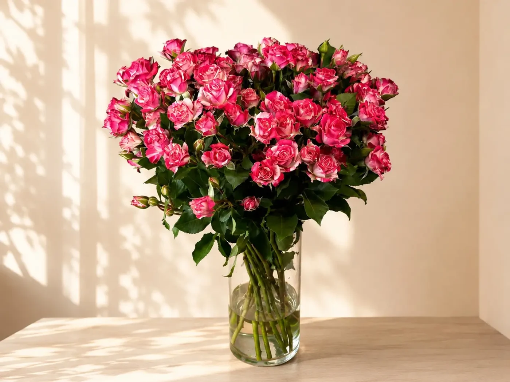
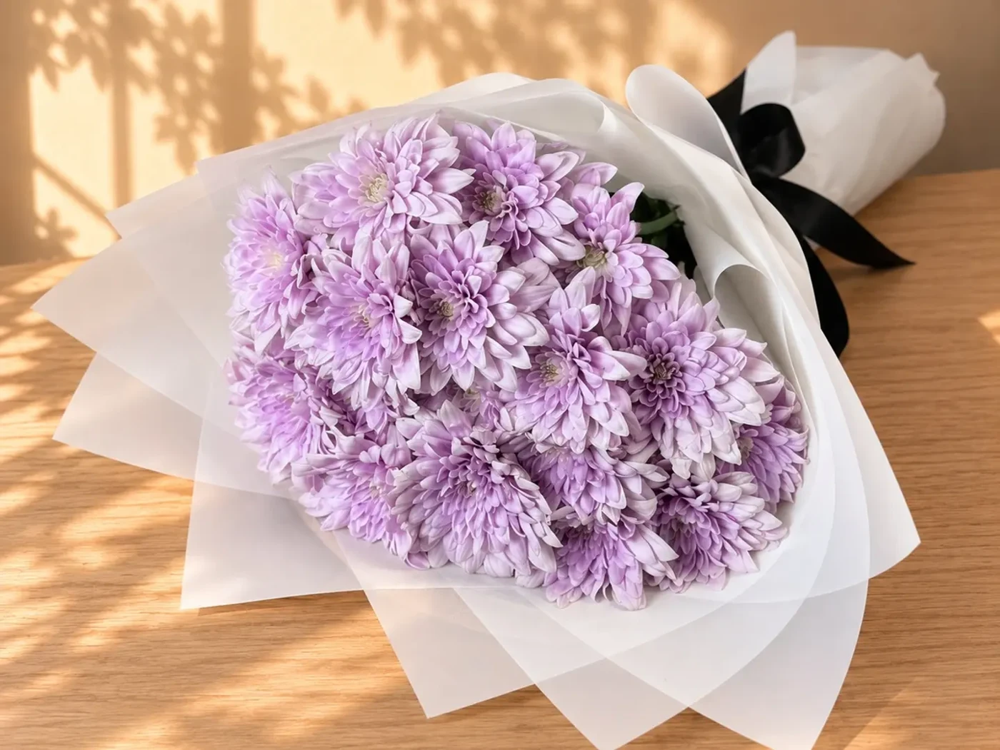

ذوق
باقات الورد
تنسيقات تختارها بعينك، وكلمات تكتبها بقلبك. باقات وفازات ولمسات إهداء من وعود الورد في المدينة.


باقات الورد

باقات الورد
باقات الورد

باقات الورد

باقات الورد

باقات الورد
يضم الكتالوج باقات يد وفازات بتنسيقات مختلفة، إلى جانب إضافات الأكريليك والبالونات. حدّد شكل الهدية أولًا، ثم الألوان التي تحبها.
تعرّف على الخدماتاختر المناسبة، ثم انتقل إلى تفاصيل الهدية ورسالتها. تُراجع الخيارات مع المحل قبل اعتماد الطلب.
حدّد المناسبة والتنسيق والألوان، وجرّب بطاقة الإهداء. ستجد التفاصيل جاهزة للمراجعة قبل التواصل.
جهّز هديتكوجودك أجمل ما في المناسبة.
كلمة منك تصنع الفرقابدأ من المعرض، افتح الصورة الأقرب لذوقك ثم اختر «استخدمه مرجعًا». يمكنك تحديد المناسبة والألوان وكتابة بطاقة الإهداء في صفحة تجهيز الهدية.
يُؤكد المحل السعر والتوفر ومكونات التنسيق بعد التواصل. الصور نماذج منشورة، وقد تختلف الزهور الموسمية والألوان والتغليف.
لا. تظهر لك مراجعة مكتوبة أولًا، ثم تختار فتح قناة التواصل. لا توجد عملية دفع أو حجز مؤكد داخل هذه المعاينة.
اكتب ما ترغب بتغييره في خانة التفاصيل، مثل اللون أو التغليف أو إضافة بطاقة. يعتمد التنفيذ والتكلفة والموعد على تأكيد المحل.